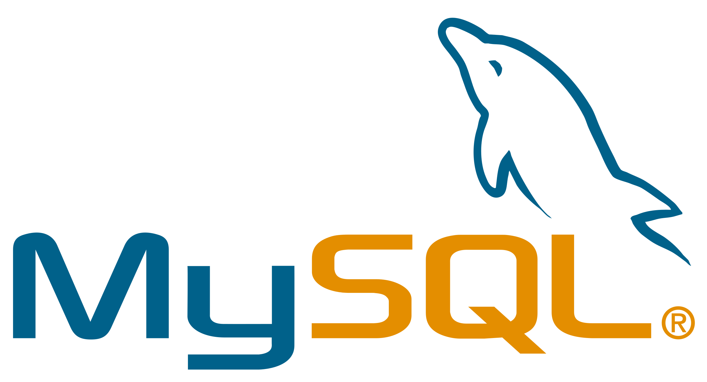
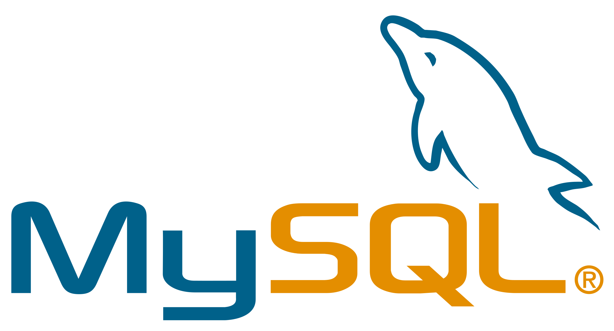
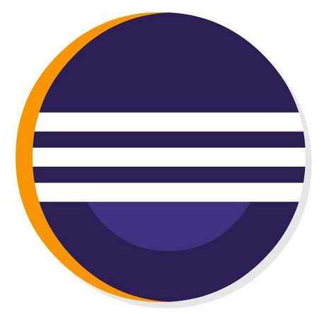
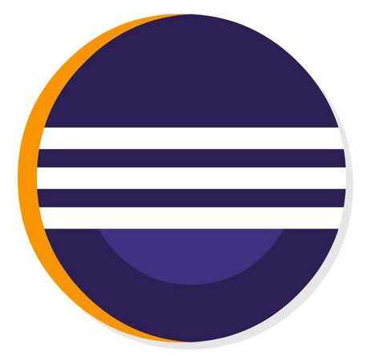

전진우 introduction
안녕하세요! 신입 개발자를 꿈꾸는 전진우입니다.
• 개발자를 꿈꾸기 전부터 도전을 즐거워하며 살다가, 지금은 개발의 매력에 푹 빠져 도전하고 있습니다.
• 사람들과의 많은 만남으로 나와 상대방의 다름을 이해하고 수용할 수 있는 마음과 존중하는 태도를 가지고 있습니다.
• 도전을 두려워하지 않으며, 항상 긍정적으로 웃으며 살아가고 있습니다.
• 가벼운 산책, 게임 그리고 영화 감상을 좋아합니다.
경력사항
김해공항 신세계 면세품 인도장
• 고객 면세품 인도• 관세품 신고 업무
LG이노텍
• 휴대폰 모듈 생산, 검사, 포장
롯데시네마
• 판매하는 모든 품목 재고관리• 식음료 판매


 



 
